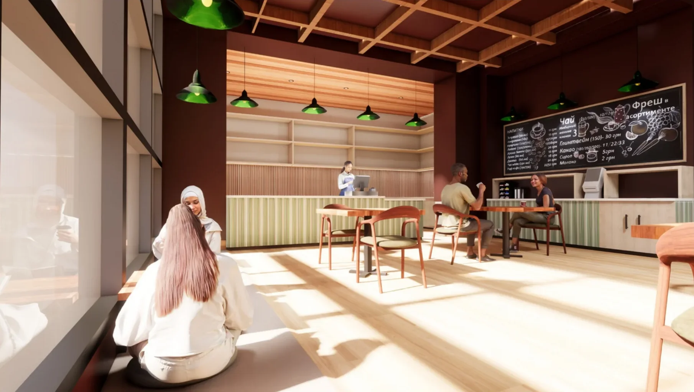

Collaborated on design development by producing AutoCAD plans, rendering SketchUp models, and assembling mood boards and finish options. Streamlined workflows through digital library organization, vendor resource management, and client presentation prep.
Portfolio2026
Sydney Vo
Interior Design Portfolio
Designing spaces that are intuitive, functional, and welcoming for everyone who moves through them.

Contents06 projects
Selected work
Commercial, residential, retail, and built work — from hand drafting to Revit and Enscape.
In the studio2026 – 27
Upcoming
Work that’s on the drafting table right now. Full case studies will land here as each project wraps.
About me
Good design is accessible design.
Hi, I’m Sydney Vo, a senior at Meredith College pursuing a Bachelor of Science in Interior Design with minors in Marketing and Studio Arts. My passion for design began early, working on creative projects with my dad, and my background in STEM shaped a mindset that bridges logical structure with creative vision.
I believe good design must be inherently accessible and inclusive, so I work to create environments that are intuitive, highly functional, and welcoming for everyone who moves through them.
Through internships at Furnitureland South, Lauren Ashley Design LLC, and MM Interior Design Group, I’ve built a strong foundation in AutoCAD, SketchUp, Enscape, visual storytelling, and site coordination. I keep learning through new digital tools, creative crafts, and sharper technical skills, and I’m committed to making a meaningful, lasting difference in the profession.

RésuméDownload portfolio PDF ↓
Experience
Supported residential and commercial projects through space planning, detailed AutoCAD drafting, and 3D renderings in SketchUp and Enscape. Curated color and finish schemes, prepared client presentations, and managed library resources and vendor communication.
Assisted designers in researching, building, and installing interactive showroom displays from concept to completion. Conceived and executed a full-scale retail vignette and presented insights on visual merchandising and store layout.
Education
Meredith College
B.S. Interior Design · Minors in Marketing & Studio Arts
Expected May 2027 · 3.94 GPA
Meredith College’s Interior Design program is accredited by the Council for Interior Design Accreditation (CIDA).
Honors
- Dean’s List All semesters
- Academic Merit Scholarship All semesters
- Meredith–Rumley Promise Scholarship All semesters
- Sandra Graham Shelton Scholarship for Interior Design All semesters
Languages
- English Native
- Vietnamese Elementary
Software
- AutoCAD
- Revit
- SketchUp
- Enscape
- Photoshop
- Illustrator
- InDesign
- Canva
- Microsoft Office
- Google Suite
By hand
- Hand drafting
- Sketching
- Physical models
Off the clock
- Knitting
- Photography
- Sewing
- Painting
- Hiking
Contact